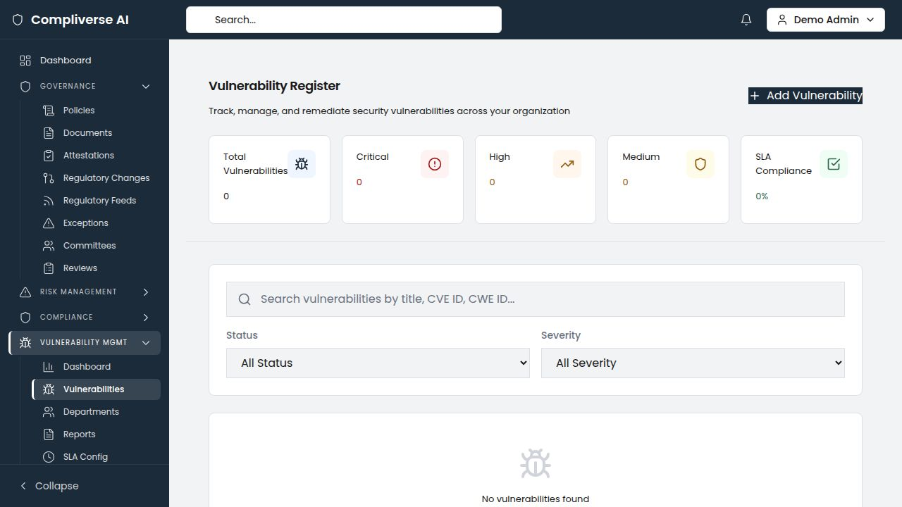

02 Product Brochure General
ComplyVerse AI — Product Brochure / One-Pager
COMPLYVERSE AI
Governance. Risk. Compliance. Unified by Intelligence.
The Challenge
Modern enterprises manage governance, risk, and compliance across a fragmented landscape of disconnected tools. Audit teams work in one system. Compliance officers track frameworks in spreadsheets. Risk managers maintain separate registers. Vulnerability data lives in yet another silo. The result: duplicated effort, inconsistent data, blind spots — and audit findings that could have been prevented.
The Solution
ComplyVerse AI is an enterprise-grade, AI-native GRC platform that unifies audit management, compliance tracking, enterprise risk management, vulnerability management, IT asset governance, and evidence management into a single, multi-tenant platform.
Platform Overview

Platform Modules
Audit Management

- Full audit lifecycle: annual planning, risk-based audit universe, engagement management, fieldwork execution, and finding tracking
- AI-powered statistical sampling with configurable confidence levels and methodologies (random, monetary unit, attribute)
- Prior-audit cross-referencing with recurring finding detection across historical engagements
- Digital workpaper management with review workflows and quality assurance
- Automated notification system: fieldwork reminders, finding response deadlines, overdue action plans, QAIP schedules, and certification expiry alerts
- Time and expense tracking with budget monitoring per engagement
Compliance Management
- Multi-framework compliance tracking with real-time status dashboards
- Obligation management with owner assignment, due dates, and evidence linking
- Compliance calendar with upcoming deadlines and milestone tracking
- Certification lifecycle management with expiry alerting
Enterprise Risk Management (ERM)
- Comprehensive risk register with inherent and residual risk scoring
- Interactive risk heat maps with configurable likelihood and impact matrices
- Risk assessment workflows with treatment plan tracking
- Department-level risk ownership and accountability
- AI-assisted risk analysis and scoring recommendations
Unified Control Library

- AI-powered cross-framework control mapping using semantic similarity analysis
- Auto-grouping of related controls across frameworks (ISO 27001, SOC 2, NIST, PCI DSS, HIPAA, GDPR, and custom frameworks)
- Evidence coverage matrix with gap identification
- Side-by-side control comparison across frameworks
- Gap analysis dashboard with remediation prioritization
Vulnerability Management

- Centralized vulnerability register with CVE/CWE tracking and CVSS scoring
- SLA compliance monitoring with configurable remediation timelines
- Bulk assignment to departments with priority-based routing
- Aging analysis and mean-time-to-remediate (MTTR) metrics
- Integration-ready for scanner imports
IT Asset Inventory & Valuation
- Complete IT asset lifecycle management across applications, infrastructure, data stores, cloud resources, and third-party systems
- CIA triad ratings (Confidentiality, Integrity, Availability) per asset
- Risk heat maps correlating asset criticality with vulnerability exposure
- Assessment aging analysis to identify stale risk evaluations
- CSV bulk import/export with downloadable templates
Evidence Management
- Centralized evidence vault with version control and approval workflows
- Automated evidence-to-control mapping across frameworks
- Evidence review lifecycle: draft, pending review, approved — with revision workflows
- Support for documents, screenshots, configurations, and attestations
Information Security Projects
- Project portfolio management for security initiatives
- Milestone and task tracking with progress visualization
- Budget estimation and actual cost tracking
- Risk tracking per project with health indicators (On Track, At Risk, Off Track)
- Team management with role assignments
Governance & Policy Management
- Policy lifecycle management with version control
- Committee and meeting management with action item tracking
- Department-level governance structure
AI Capabilities
Capability | Description |
Cross-Framework Control Mapping | Automatically identifies semantically similar controls across regulatory frameworks using AI similarity analysis |
Auto-Grouping | Clusters related controls into unified control groups, reducing duplication and mapping effort |
AI Risk Scoring | Generates risk score recommendations based on organizational context and historical data |
Recurring Finding Detection | Identifies findings that recur across audit engagements with severity trend analysis |
Statistical Sampling | Calculates optimal sample sizes with configurable confidence levels and supports multiple sampling methodologies |
AI Summaries | Generates executive summaries for control groups, risk assessments, and audit findings |
Gap Analysis | Automatically identifies controls lacking evidence coverage and prioritizes remediation |
Architecture & Security
- Multi-Tenant Architecture: Complete tenant isolation with schema-based security
- Role-Based Access Control: Granular permissions at the module, feature, and action level
- API-First Design: RESTful API architecture enabling integration with existing enterprise systems
- Modern Tech Stack: FastAPI (Python) backend, Next.js 14 (TypeScript) frontend, PostgreSQL database
- Deployment Flexibility: Cloud-hosted SaaS or on-premises deployment options
Key Metrics
Metric | Impact |
Audit preparation time | Reduced by up to 60% |
Cross-framework mapping effort | Reduced by up to 80% with AI automation |
Number of GRC tools replaced | 4–7 point solutions consolidated |
Time to first value | Days, not months |
Evidence collection workflow | Automated linkage eliminates manual tracking |
Ideal For
- Financial Services & Banking: SOX, Basel III, OCC, FDIC compliance; multi-entity audit programs
- Healthcare & Life Sciences: HIPAA, HITRUST, FDA 21 CFR Part 11 compliance; clinical data governance
- Technology & SaaS: SOC 2, ISO 27001, GDPR compliance; rapid scaling with continuous compliance
- Any Regulated Industry: Insurance, energy, government, manufacturing with multi-framework obligations
Getting Started
- Discovery Call — We assess your current GRC landscape and identify consolidation opportunities
- Platform Configuration — Tenant setup, framework uploads, and role configuration (typically 1–2 weeks)
- Data Migration — Assisted migration of existing risk registers, control libraries, and audit histories
- Go-Live & Training — Guided onboarding with dedicated customer success support
Contact
Website: [complyverse.ai]
Email: info@[company-domain].com
Schedule a Demo: [demo-link]
ComplyVerse AI — Governance. Risk. Compliance. Unified by Intelligence.